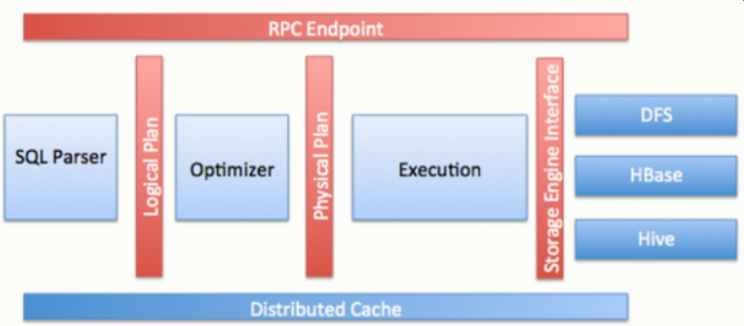
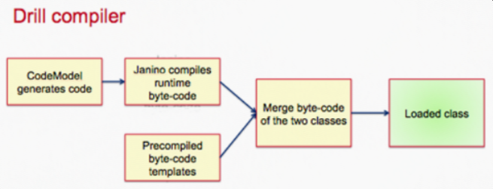
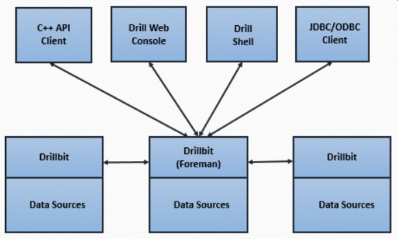
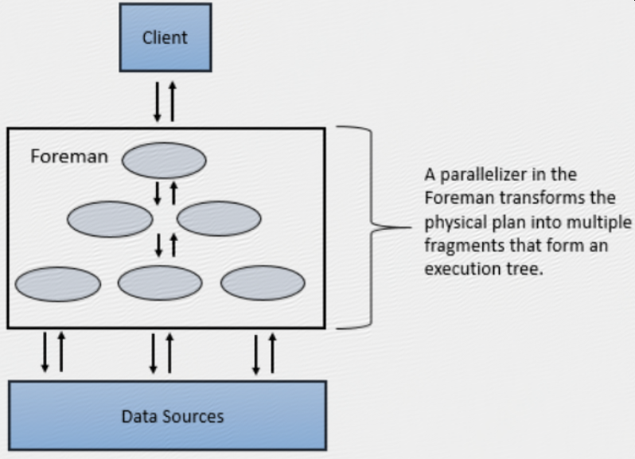

Drill 1 - 简介、安装及使用
一 简介
Drill is an Apache open-source SQL query engine for Big Data exploration. Drill is designed from the ground up to support high-performance analysis on the semi-structured and rapidly evolving data coming from modern Big Data applications, while still providing the familiarity and ecosystem of ANSI SQL, the industry-standard query language. Drill provides plug-and-play integration with existing Apache Hive and Apache HBase deployments.
Drill is the world's first and only distributed SQL engine that doesn't require schemas. It shares the same schema-free JSON model as MongoDB and Elasticsearch. No need to define and maintain schemas or transform data (ETL). Drill automatically understands the structure of the data.
Self-describing data formats such as Parquet, JSON, AVRO, and NoSQL databases have schema specified as part of the data itself, which Drill leverages dynamically at query time.
Drill does not have a centralized metadata requirement. Drill metadata is derived through the storage plugins that correspond to data sources. Storage plugins provide a spectrum of metadata ranging from full metadata (Hive), partial metadata (HBase), or no central metadata (files).
Drill supports the standard SQL:2003 syntax.
Drill is designed from the ground up for high throughput and low latency. It doesn't use a general purpose execution engine like MapReduce, Tez or Spark. As a result, Drill is flexible (schema-free JSON model) and performant. Drill's optimizer leverages rule- and cost-based techniques, as well as data locality and operator push-down, which is the capability to push down query fragments into the back-end data sources. Drill also provides a columnar and vectorized execution engine, resulting in higher memory and CPU efficiency.
Drill can combine data from multiple data sources on the fly in a single query, with no centralized metadata definitions. Here's a query that combines data from a Hive table, an HBase table (view) and a JSON file:
SELECT custview.membership, sum(orders.order_total) AS sales
FROM hive.orders, custview, dfs.`clicks/clicks.json` c
WHERE orders.cust_id = custview.cust_id AND orders.cust_id = c.user_info.cust_id
GROUP BY custview.membership
ORDER BY 2;
Architecture

Apache Drill is a low latency distributed query engine for large-scale datasets, including structured and semi-structured/nested data. Inspired by Google’s Dremel, Drill is designed to scale to several thousands of nodes and query petabytes of data at interactive speeds that BI/Analytics environments require.
Drill is also useful for short, interactive ad-hoc queries on large-scale data sets. Drill is capable of querying nested data in formats like JSON and Parquet and performing dynamic schema discovery. Drill does not require a centralized metadata repository.
Drill includes a distributed execution environment, purpose built for large- scale data processing. At the core of Apache Drill is the "Drillbit" service, which is responsible for accepting requests from the client, processing the queries, and returning results to the client.
A Drillbit service can be installed and run on all of the required nodes in a Hadoop cluster to form a distributed cluster environment. When a Drillbit runs on each data node in the cluster, Drill can maximize data locality during query execution without moving data over the network or between nodes. Drill uses ZooKeeper to maintain cluster membership and health-check information.
Though Drill works in a Hadoop cluster environment, Drill is not tied to Hadoop and can run in any distributed cluster environment. The only pre-requisite for Drill is ZooKeeper.
Drill provides an extensible architecture at all layers, including the storage plugin, query, query optimization/execution, and client API layers. Drill uses classpath scanning to find and load plugins, and to add additional storage plugins, functions, and operators with minimal configuration.
Storage plugins in Drill represent the abstractions that Drill uses to interact with the data sources.In the context of Hadoop, Drill provides storage plugins for distributed files and HBase. Drill also integrates with Hive using a storage plugin.
Runtime compilation enables faster execution than interpreted execution. Drill generates highly efficient custom code for every single query. The following image shows the Drill compilation/code generation process:

Using an optimistic execution model to process queries, Drill assumes that failures are infrequent within the short span of a query. Drill does not spend time creating boundaries or checkpoints to minimize recovery time.
Query过程
SQL--[parser]-->Logical Plan--[optimizer]-->Physical Plan--[parallelizer]-->Major Fragments->Minor Fragments->Operator
When you submit a Drill query, a client or an application sends the query in the form of an SQL statement to a Drillbit in the Drill cluster. A Drillbit is the process running on each active Drill node that coordinates, plans, and executes queries, as well as distributes query work across the cluster to maximize data locality.

The Drillbit that receives the query from a client or application becomes the Foreman for the query and drives the entire query. A parser in the Foreman parses the SQL, applying custom rules to convert specific SQL operators into a specific logical operator syntax that Drill understands. This collection of logical operators forms a logical plan. The logical plan describes the work required to generate the query results and defines which data sources and operations to apply.
Drill uses Calcite, the open source SQL parser framework, to parse incoming queries.
The Foreman sends the logical plan into a cost-based optimizer to optimize the order of SQL operators in a statement and read the logical plan. The optimizer applies various types of rules to rearrange operators and functions into an optimal plan. The optimizer converts the logical plan into a physical plan that describes how to execute the query.
explain plan for <query> ;https://drill.apache.org/docs/explain/
A parallelizer in the Foreman transforms the physical plan into multiple phases, called major and minor fragments. These fragments create a multi-level execution tree that rewrites the query and executes it in parallel against the configured data sources, sending the results back to the client or application.

A major fragment is a concept that represents a phase of the query execution. A phase can consist of one or multiple operations that Drill must perform to execute the query. Drill assigns each major fragment a MajorFragmentID.
Drill uses an exchange operator to separate major fragments. An exchange is a change in data location and/or parallelization of the physical plan. An exchange is composed of a sender and a receiver to allow data to move between nodes.
Major fragments do not actually perform any query tasks. Each major fragment is divided into one or multiple minor fragments (discussed in the next section) that actually execute the operations required to complete the query and return results back to the client.
Each major fragment is parallelized into minor fragments. A minor fragment is a logical unit of work that runs inside a thread. A logical unit of work in Drill is also referred to as a slice. The execution plan that Drill creates is composed of minor fragments. Drill assigns each minor fragment a MinorFragmentID.

Minor fragments contain one or more relational operators. An operator performs a relational operation, such as scan, filter, join, or group by. Each operator has a particular operator type and an OperatorID. Each OperatorID defines its relationship within the minor fragment to which it belongs.

You cannot modify the number of minor fragments within the execution plan. However, you can view the query profile in the Drill Web Console and modify some configuration options that change the behavior of minor fragments, such as the maximum number of slices.
https://drill.apache.org/docs/query-profiles/
Minor fragments can run as root, intermediate, or leaf fragments. An execution tree contains only one root fragment. The coordinates of the execution tree are numbered from the root, with the root being zero. Data flows downstream from the leaf fragments to the root fragment.
The root fragment runs in the Foreman and receives incoming queries, reads metadata from tables, rewrites the queries and routes them to the next level in the serving tree. The other fragments become intermediate or leaf fragments.
Intermediate fragments start work when data is available or fed to them from other fragments. They perform operations on the data and then send the data downstream. They also pass the aggregated results to the root fragment, which performs further aggregation and provides the query results to the client or application.
The leaf fragments scan tables in parallel and communicate with the storage layer or access data on local disk. The leaf fragments pass partial results to the intermediate fragments, which perform parallel operations on intermediate results.

二 安装
wget http://apache.mirrors.hoobly.com/drill/drill-1.14.0/apache-drill-1.14.0.tar.gz
tar - xvzf apache-drill-1.14.0.tar.gz
部署方式：
1 单机
启动
bin/drill-embedded
连接
sqlline - u "jdbc:drill:zk=local"
退出sqlline
sqlline> !quit
https://drill.apache.org/docs/drill-in-10-minutes/
2 分布式
zk必须
连接
通过zk：
sqlline –u jdbc:drill:[schema=<storage plugin>;]zk=<zk name>[:<port>][,<zk name2>[:<port>]... ]/<directory>/<cluster ID>
直连Drillbit：
sqlline - u jdbc:drill:[schema=<storage plugin>;]drillbit=<node name>[:<port>][,<node name2>[:<port>]...]/<directory>/<cluster ID>
2.1 手工启动Drillbit集群
配置
drill-override.conf
drill.exec:{ cluster-id: "<mydrillcluster>", zk.connect: "<zkhostname1>:<port>,<zkhostname2>:<port>,<zkhostname3>:<port>" }
启动
drillbit.sh [--config <conf-dir>] (start|stop|graceful_stop|status|restart|autorestart)
https://drill.apache.org/docs/installing-drill-on-the-cluster/
2.2 drill on yarn
环境变量
export MASTER_DIR=/path/to/master/dir
export DRILL_NAME=apachedrillx.y.z
export DRILL_HOME=$MASTER_DIR/$DRILL_NAME
export DRILL_SITE=$MASTER_DIR/site
准备
cp $DRILL_HOME/conf/drill-override.conf $DRILL_SITE
cp $DRILL_HOME/conf/drill-env.sh $DRILL_SITE
cp $DRILL_HOME/jars/3rdparty/$yourJarName.jar $DRILL_SITE/jars
如果有外部jar，比如lzo等，需要拷贝到$DRILL_SITE/jars
配置
$DRILL_SITE/drill-override.conf
$DRILL_SITE/drill-on-yarn.conf
启动
drill-on-yarn.sh --site $DRILL_SITE start
https://drill.apache.org/docs/creating-a-basic-drill-cluster/
drill-on-yarn.sh --site $DRILL_SITE status
Drill on yarn管理页面
ps: 该页面无法通过yarn proxy方式访问

3 drill query hive
准备
cp $DRILL_HOME/conf/storage-plugins-override.conf $DRILL_SITE
添加
"storage": {
hive: {
type: "hive",
enabled: true,
"configProps": {
"hive.metastore.uris": "thrift://localhost:9083",
"hive.metastore.sasl.enabled": "false",
"fs.default.name": "hdfs://localhost:9000/"
}
}
}
然后重启drill，另外还可以通过web或者rest api添加hive plugin，然后就可以看到hive的数据库
0: jdbc:drill:zk=localhost:2181/drill/drillbi> show databases;
+---------------------+
| SCHEMA_NAME |
+---------------------+
| cp.default |
| hive.default |
| hive.temp |
| information_schema |
| opentsdb |
| sys |
+---------------------+
参考：https://drill.apache.org/docs/configuring-storage-plugins/
三 使用
1 命令行
sqlline –u jdbc:drill:zk=$zkhost
0: jdbc:drill:zk=$zkhost> SELECT * FROM cp.`employee.json` LIMIT 3;
2 页面
连接任一drillbits服务器

四 设计原理
Rather than operating on single values from a single table record at one time, vectorization in Drill allows the CPU to operate on vectors, referred to as a record batches. A record batch has arrays of values from many different records. The technical basis for efficiency of vectorized processing is modern chip technology with deep-pipelined CPU designs. Keeping all pipelines full to achieve efficiency near peak performance is impossible to achieve in traditional database engines, primarily due to code complexity.